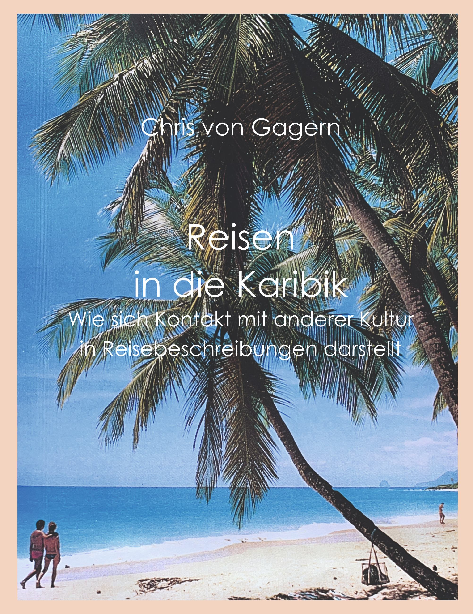

Chris von Gagern Deutsch

Born in 1953 in Munich, he studied Romance languages and American studies at the Free University of Berlin and completed his doctorate on European representations of cultural contacts: Travels in the Caribbean: How contact with other cultures is portrayed in travel descriptions.
Supported by the Volkswagen Foundation as part of the focus program "The 'Foreign' and the 'Own' - Possibilities and Problems of Intercultural Understanding," he worked on a literary research project at the Latin America Institute of the Free University of Berlin from 1999 to 2001. This project analyzed the reverse perspective: the Caribbean discourse on Europe: Disillusioning Europe: How Caribbean writers develop a strategy of creolization adaptation.
Traveling to the Caribbean
Using the example of the Caribbean as a 'dream travel destination', travel descriptions of European authors are examined with regard to the question of what attitude they adopt towards foreign cultures.
The timeline ranges from the conquerors of the New World to today's tourists. Organized more according to systematic rather than chronological criteria, the study examines various types of travel in chapters, comparing different ways of being on the road, such as those of conquerors, missionaries, researchers, adventurers, exiles, journalists, invited guests, and pleasure tourists.
In the overwhelming majority of the authors examined, a desire for appropriation and cultural assimilation of the Other emerges, more or less openly. In contrast, examples from a minority of critics and opponents of the prevailing practice are all the more striking, pointing out that from the beginning, other forms of cultural contact were indeed possible.
424 S., first published 1994, revised new edition 2023. ISBN 978-3-7578-8084-2; € 17
available online as paperback at: BOOKSonDEMAND Amazon eBook Buecher.de
& as an ebook ISBN 9783758377112 at: BOOKSonDEMAND AppleBooks Amazon eBook Buecher.de
& as ebook ISBN 9783758377112 at:
Download (PDF):IntroductionBibliography
Disenchanted with Europe
 In the literary analysis, the focus is on the critical perspective that migrants gain from Europe and how they adjust to the experienced conditions.
In the literary analysis, the focus is on the critical perspective that migrants gain from Europe and how they adjust to the experienced conditions.
This is examined through the discourse of Caribbean authors who depict stays in London or Paris. As disillusioning as the experiences described may be, the finding is surprising in that their novels and autobiographical narratives combine critical resistance against the dismissive conditions with the concept of creolization. A characteristic of the Caribbean approach is the overlap of different cultures, from which the blending of new variations emerges.
The thesis is put forth that Caribbean expertise, characterized by flexible adaptation, can be considered groundbreaking in times of asymmetric globalization.
420 S., first published 2003, slightly revised new edition 2023. ISBN 978-3-8311-4723-6, € 25
available online as paperback at: BOOKSonDEkMAND Amazon eBook Buecher.de
& as an ebook ISBN 9783758387210 at: BOOKSonDEMAND AppleBooks Amazon eBook Buecher.de
Download (PDF):IntroductionBibliography Summary